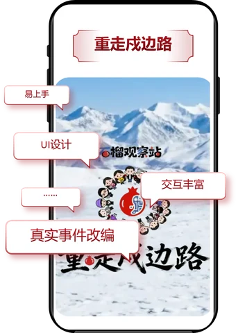
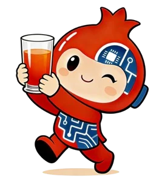

调研报告
科技赋能与实践育人：高校铸牢中华民族共同体意识的创新路径与对策研究
寒假调研走访三所院校，整理石河子大学的学生管理机制、伊犁师范大学的实践育人经验。报告关注口述史逐渐流失、地方史料分散，以及如何让青年通过交互作品理解这些经历。
关于推动阿克苏特色林果产业数智化与农文旅融合发展的建议
暑期调研从果园、合作社和加工企业出发，梳理苹果从种植到销售的环节。团队建议在防伪溯源中加入品牌故事，并把果园、柯柯牙治沙史与研学线路串联起来。据暑期总结，相关建议已获阿克苏地区人大采纳。
社区与乡村的交往观察
暑期成果报告还记录了阿克苏社区服务和和田庭院经济，讨论志愿服务、邻里互助与共同经营怎样发生在具体的日常生活中。
资料来源 寒假成果大报告第 46–47 页；暑期成果大报告第 42–44 页；暑期汇报第 18 页。
数字作品



《重走戍边路》
基于魏德友老人的戍边经历，队员将雪山巡边、军民分享饮水等片段编成第一人称互动故事。长按擦拭界碑、倾斜设备倒水，是故事里的两个动作。
《一颗苹果的故事》与“石小榴”
暑期团队将阿克苏果园的一线素材用于 AIGC 品牌动画。原创吉祥物“石小榴”则由队徽发展而来，延伸出表情包、新年形象和宣传画册。
从史料到交互场景
“红脉数基”整理文献、图片等多模态史料，支持数字内容生成。“红途智创”探索以多智能体协作生成 3D 红色故事互动游戏；暑期总结记录的进度为内测筹备。
资料来源 寒假成果大报告第 51–56 页、寒假汇报第 16–17 页；暑期总结报告第三部分、暑期汇报第 16–18 页。
荣誉成果
红石榴实践队 · 寒假社会观察
据暑期成果报告记载，实践队获北京航空航天大学 2026 年寒假社会观察实践计划一等奖。
红石榴宣讲团 · 《石榴结籽，科技铸疆》
在首届“强国先锋 同心筑梦”北京高校铸牢中华民族共同体意识主题宣讲展示活动中，宣讲团获“精品宣讲成果奖”和“精品宣讲稿”。
阅读北航新闻网报道 ↗“红脉数基”项目 · 创新创业
据暑期总结及汇报，该项目获“挑战杯”首都大学生创业计划竞赛擂主，并获国家级大学生创新创业训练计划项目立项。
资料来源 暑期成果大报告第 9 页；暑期汇报第 16、20 页；暑期总结报告第三部分。
媒体报道
寒假 · 从军垦社区到校园
寒假成果报告收录了人民日报客户端、中国新闻网、中国青年网等平台的报道记录，以及青年北航、同心北航、石河子共青团等公众号推送。团队的原创图文收在微信公众号“石榴观察站”。
暑假 · 南疆实践与工作站
暑期汇报记录了中国日报、中国新闻网、北京青年报等媒体的报道。北航新闻网也转载了实践队南疆调研及党建工作站的相关报道。
阅读已收录的媒体原文 →资料来源 寒假成果大报告第 47–51 页、寒假汇报第 18 页；暑期成果大报告第 45 页、暑期汇报第 22 页。